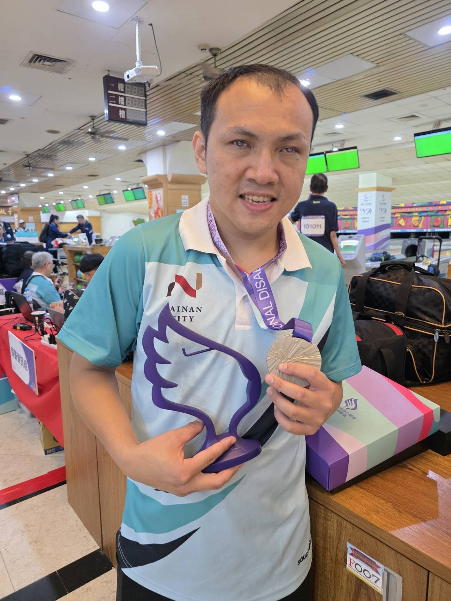
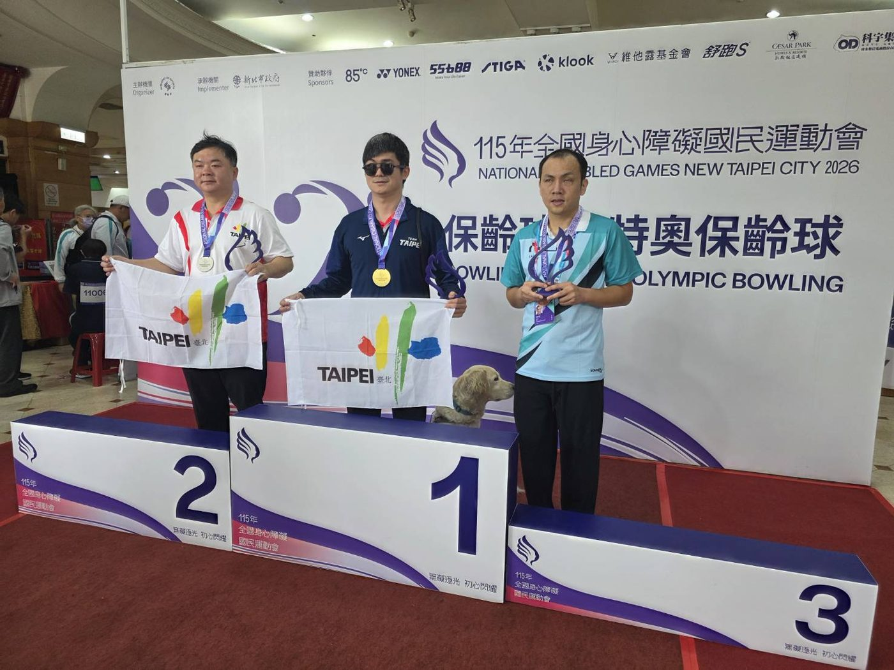

01我的故事
視障保齡球選手，看不見還是要活的精彩！
我是視障保齡球選手陳柏毓，還看得見的時候就很熱愛運動，24歲看不見之後我沒有停下腳步，馬上開始從事按摩的工作，這兩年開始接觸保齡球，雖然看不見，但我還是不斷地突破自己，目前保齡球的成績落在全國第三名，期許自己有一天也可以代表國家出賽。


視障保齡球選手，看不見還是要活的精彩！
我是視障保齡球選手陳柏毓，還看得見的時候就很熱愛運動，24歲看不見之後我沒有停下腳步，馬上開始從事按摩的工作，這兩年開始接觸保齡球，雖然看不見，但我還是不斷地突破自己，目前保齡球的成績落在全國第三名，期許自己有一天也可以代表國家出賽。


歷屆成績 · 更新於 2026/08/02
訓練與參賽計畫
保齡球訓練每周兩次(早上8:00〜中午12:00或者晚上6:30〜10:30)
體能訓練每周兩次(早上7:30〜早上10:30)
增進全國比賽的排名和代表國家參加國際型賽事。
我想達到…
保齡球訓練每周兩次(早上8:00〜中午12:00或者晚上6:30〜10:30)
體能訓練每周兩次(早上7:30〜早上10:30)
保齡球訓練每周兩次(早上8:00〜中午12:00或者晚上6:30〜10:30)
體能訓練每周兩次(早上7:30〜早上10:30)
保齡球訓練每周兩次(早上8:00〜中午12:00或者晚上6:30〜10:30)
體能訓練每周兩次(早上7:30〜早上10:30)
跑步、核心訓練、拉筋伸展,維持體能與平衡感。
透過保齡球實際練習,增加穩定度。
透過練習穩定出手位置和控制身體的出球角度。
平常深呼吸練習,練習維持穩定情緒,比賽時也可以運用深呼吸穩定情緒。
需求項目與數量（依官方頁面）
| 選手營養費 | NT$ 41,600 |
| 運動防護費 | NT$ 436,800 |
| 訓練器材裝備費 | NT$ 26,000 |
| 移地訓練費 | NT$ 24,000 |
| 參賽旅運費 | NT$ 24,000 |
| 經費需求合計 | NT$ 552,400 |
標示「不公開」者為官方頁面未揭露之欄位。